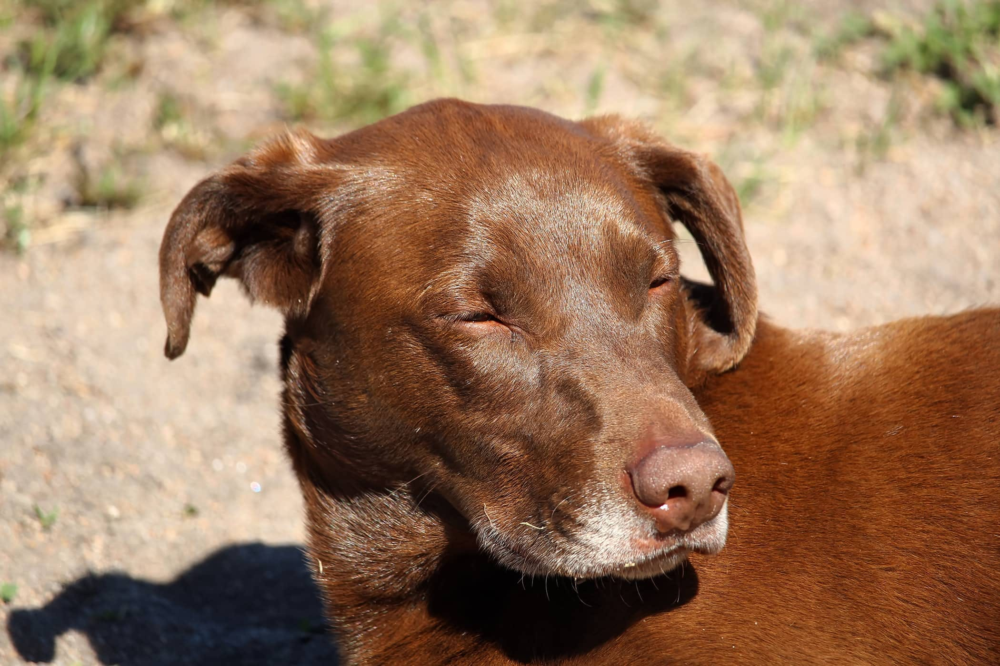

January 2014
“Caroline has to be the Angel of Dogs. With extensive knowledge,
and a historical background in everything doggie - including
training, first aid, understanding different breeds and their
personalities, she is an expert in her field. Only downside is,
my dog loves her so much, she wants to stay there..... Dorothy”
Millie Rottweiler from Suffolk, came for training lessons and
dog boarding
January 2014
“Caroline performs magic on even the worse of behaved dogs. She
loves them all. My Ivy adores her, and can't wait to get out the
car whether it be for training, socialization or day care. We
are very sorry to be losing her from the area. She's more than
enriched Ivy's and ours life.”
Ivy Mixed Pitbull Labrador breed from Lilley
January 2014
“I took my Boxer pup to the social classes with Caroline, they
were very good and gave Mylo a good start to his doggie life,
would highly recommend. He certainly gave the larger pups a run
for their money.”
Mylo Boxer puppy from Luton, came for socialising
sessions
January 2014
“I would really recommend Caroline and DogBasics. As a
completely new dog owner to a rescue Jack Russell she has been a
real help and people are always complementing me on our walks
about how well behaved my dog is. Poppy loves the agility and
going to see Caroline.”
Poppy Jack Russell from Luton, took a Basic Obedience course
and agility
January 2014
“I have been going to DogBasics since Feb 2008 and not only does
Benji love it but so do I . Caroline is friendly approachable
and always willing to give advice or help, and put in that
little extra. I am just about to get a new puppy and wouldnt
dream of going anywhere else for his training, no doubt he will
also look forward to his sessions with Caroline as much as Benji
does. Thanks Caroline, Alison Milner”
Benji Border collie mix from Ware, Hertfordshire, took IC
course & Agility

January 2014
“Carolines training is great fun, for both humans and dogs. I
have used Caroline's doggie day care and boarding for a number
of years and I'm struggling to find someone who's care matches
that of Caroline's. Thank you for everything, and good luck,
Caroline, with the new business you will be very successful!
Nina and, of course, Hamish who misses you very much!”
Hamish Labrador from Luton, Beds, came for Dog training, day
care and boarding
January 2014
“My Husband and I would highly recommend Caroline. She
understands dogs very well and also loves them very much. She is
a natural at training, very skilled. She has strict standards
and only wants the best for the dogs. She is a highly skilled
lady who is happy to give advice if needed. I don't think you
will find anyone better at dog training. Will be very sad to
lose her from this area."
Molly Cockerpoo from Luton, Beds, came for Dog
training
January 2014
“I have never known anyone love dogs as much as Caroline! Lottie
loves her just as much and is absolutely beside herself with joy
whenever we arrive at Caroline's. Her training sessions and tips
have been invaluable. If you want a well socialised dog under
training where you can meet other like-minded owners, I have no
hesitation in reommending DogBasics. Wendy Wolstencroft”
Lottie Border Collie from Lilley, Hertfordshire, took
Introduction Course, agility, dog day care and dog
boarding
January 2014
“Caroline consistently provides a home from home for my staffy,
Barley. She has constant fun, games, mental stimulation and the
chance to play with all her doggy friends. The love, care,
attention and fun Barley gets being with Caroline is absolutely
fantastic! Helen Freeman”
Barley blond Staffordshire bullterrier from Hitchin,
Hertfordshire, took Puppy class and came for Dog Boarding and
Day Care